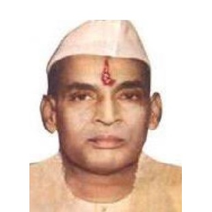

Institute

Manikya-Lal-Verma
Social Activist And Indian Politician
Manikya Lal Verma (1897–1969) was a pivotal figure in Indian politics and social activism. A leader in the freedom struggle and a member of the Constituent Assembly, he served as Rajasthan's Chief Minister and was elected to the Lok Sabha multiple times. He championed education for marginalized communities and founded organizations to uplift them. His legacy, seen in institutions like the Manikya Lal Verma Textile and Engineering College, continues to inspire. Read More